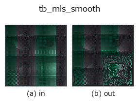

typed op• 資料種類:points → points
• 呼叫:fullseye.apply(img, "tb_mls_smooth", a=0.5, b=0.5)(2-D 的模型是一張圖 + 兩個純量旋鈕 a,b∈[0,1])

*圖為在 128×128 合成輸入上實際執行的輸出。左為輸入，右為輸出。點雲以俯視散點顯示(亮度 = z)，一維序列為折線，體資料為沿 z 的最大值投影，影片為中間影格，複數影像為振幅；無法成像的回傳值直接顯示數值。*
掃描旋鈕 a(0.1 / 0.5 / 0.9，另一旋鈕取預設):
▸ tb_mls_smooth: knob a sweep (docs site)
*旋鈕 b 不改變輸出(實測: 0.1 / 0.5 / 0.9 相同)。*
階段(前置運算子 → 本運算子，由左至右):
▸ tb_mls_smooth: stages (docs site)
換別的影像(合成場景 / 照片 / 硬幣。上排為輸入，下排為對應輸出。旋鈕取預設):
▸ tb_mls_smooth: other inputs (docs site)
將各點投影到局部多項式曲面以去除雜訊（Moving Least Squares 移動最小平方平滑）。
> 以下的詳細說明為原文 —— 摘要與標題已翻譯。
点ごとに半径 `radius` 内の近傍を集め、重み付き PCA で局所平面(法線 n と接平面の
2 軸)を推定し、近傍の「接平面上座標 (u,v) → 法線方向の高さ h」に order 次の
多項式曲面をガウス重み付き最小二乗で当てはめる。注目点自身は局所座標の原点 (0,0)
にあたるので、当てはめた曲面の (0,0) での高さ(= 定数項)ぶんだけ法線方向へ動かして
曲面上へ射影する。面の形は保ったままセンサノイズだけを均せる。
Parameters
----------
points : array_like, shape (N, 3)
入力点群。
radius : float
近傍球の半径(> 0)。局所曲面のサポート。
order : int
局所多項式の次数(既定 2)。項数は (order+1)(order+2)/2。
Returns
-------
ndarray, shape (N, 3)
平滑後の点群(順序・点数は保持)。近傍が多項式の項数に満たない点は原位置のまま。
Notes
-----
近似手法である。近傍数が項数未満/局所平面が縮退する点は動かさず原位置を維持する
(穴や境界で暴れないための安全策)。`radius <= 0` は ValueError、空入力は空を返す。
2-D 進化レジストリへ橋渡しした 3d の op `mls_smooth。実装は同じで、呼び出し規約だけ op(v, a, b) に合わせてある。a が order(既定 2)を振る。b` は未使用。
• 範例資料目錄(下載 URL / 授權) —— 2-D 用 skimage.data(BSD/公有領域)加合成圖,3-D 給出真實資料源(Stanford/PDS 等)的下載 URL。
• 運算子來歷與參考文獻 —— 該運算子族所依據的研究/方法出處。
下面的程式已確認可以執行(與圖相同的輸入)。在 Studio 說明中，此區塊會變成按鈕，可當場載入並執行。
img_to_points 0.50 0.50 tb_mls_smooth 0.50 0.50
▸ Load this pipeline · Load & run
下面的範例呼叫的是底層帳本運算子 mls_smooth。此橋接運算子只是把同一實作適配為 fn(v, a, b) 慣例，行為完全相同(只是呼叫形式不同)。
• pcl_geodesic — py -3.11 examples_3d/pcl_geodesic.py
points 作為輸入)identity · tb_points_to_voxel · tb_estimate_point_normals · tb_iss_keypoints · tb_project_points · tb_render_point_depth · tb_statistical_outlier_removal · tb_radius_outlier_removal
typed)tb_points_to_voxel · tb_estimate_point_normals · tb_iss_keypoints · tb_project_points · tb_render_point_depth · tb_statistical_outlier_removal · tb_radius_outlier_removal · tb_voxel_grid_downsample
*Provenance: ops.py — 2D 運算子登記表。本條目由 tools/opdocs.py md 自動產生(請勿手動編輯)。*
© 2026 Kazufumi Furuse — Fullseye operator documentation. Licensed under Apache-2.0.
{kind=link}
{kind=link}
{kind=link}